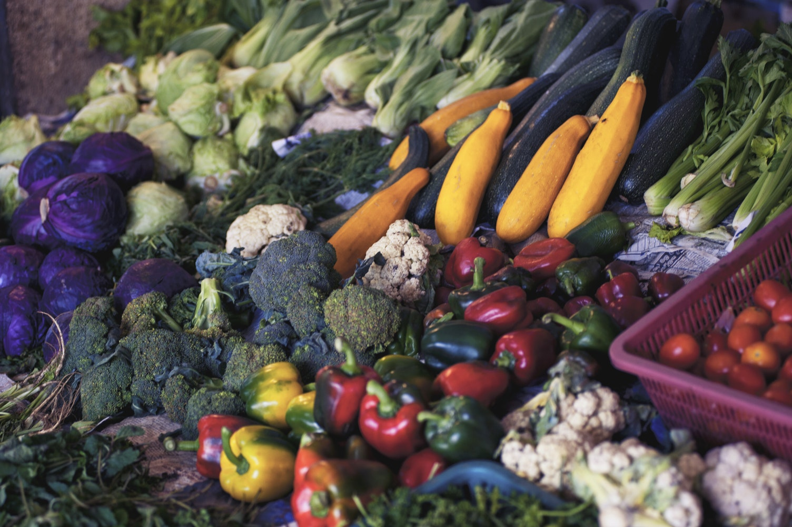

Myth #1 - We can only eat lettuce
This may be the ultimate myth about veggie and vegan diets. But it isn't true! The truth is there are still so many things you can eat if you don't eat meat or animal products. We can still eat food from every food group - including protein! Foods like nuts, lentils, chickpeas, beans and grains are all high in protein and do not come from animals! A diet of just lettuce would be soul-destroying to even the most stringent vegan. By choosing a vegetarian or vegan diet, you are not committing yourself to a life of rabbit food. I think people would be surprised by how much choice is out there, and how many shops and restaurants are now catering for veggie and vegans. Choosing diet without meat or animal by-products can also be a great way to branch out and try new foods! Whilst it may not always be easy (which is why we have easy and delicious recipes to guide you!), experimenting with new foods and flavours may result in you discovering a new favourite dish...
Myth #2 - Veggie and vegan food is bland
Ummmm hello? Have you not heard of flavouring? This is a myth that we hear a lot, so let's set the record straight. The meats that are consumed the most - like chicken, minced beef and pork - do not have very strong flavours. It's the same with fish; cod and other white fish are extremely popular, but have very little flavour. This is because it is how we seasoning that makes these foods tasty, and we can do the exact same thing with vegetarian and vegan foods! Just adding some depth of flavour with herbs and spices, a bit of heat with some chili or a zesty zing with some lime or lemon can make the world of difference to any dish. And let's not forget that good ol' salt and pepper are completely vegan!
Myth #3 - Veggie and vegan food is always healthy
Quite honestly, this could not be further from the truth. From a vegetarian point of view, cheese, butter, cream, ice cream and did I mention cheese? can absolutely still be consumed. As for a vegan diet, cookie dough, peanut butter, Magnum ice creams, Coca-Cola, Oreos, Jus-Rol pastry, dark chocolate, crumpets and, oddly, most bacon-flavoured crips are in fact vegan, and I could go on! Whilst some people choose to be vegetarian or vegan as part of a healthy lifestyle, we still need to make sure we're eating a balanced diet. If I sat at home all day munching on Oreas and bacon Wheat Crunchies I would be eating only a vegan diet, but it most certainly would not be healthy!